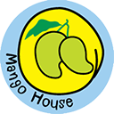

Driving end-to-end quality across iOS and macOS apps including News, Stocks, Weather, and iAd; partnered with engineering to streamline bug triage and resolution, managed QA task assignments, validated builds, and uncovered critical defects that improved stability, user experience, and revenue.
Run manual and ad-hoc tests on iOS and Android apps for Local Discovery product. Work with PM, ENG, EM to report weekly QA updates and serve as a mini-lead in NY to be the channel between 3rd party test team in India and QA managers in SF. Developed and executed software test plans, cases, scenarios, for each new feature and assigned to testers overseas.
My team worked on assuring software quality on all smartphones released to Verizon and Sprint, successfully releasing over 25 smartphones in 7 years with more than 25 million units sold. Key achievements include leading the software quality assurance team on releasing HTC One M7 and M8, both of which were awarded "Smartphone of the Year" at the Mobile World Congress in 2013 and 2014.
Developed and executed software test plans in order to identify software problems and their causes. Reported and tracked bugs, replicated reported bugs, verified bug fixes and new functionalities, regression tested new SW releases, and supported R&D by submitting appropriate logs. Led my team in number of bugs found through black-box testing and carrier requirement testing across different OS: Android, Windows, and BREW.
Pursuing Georgia Tech's OMSA (Online Master of Science in Analytics), ranked the #1 most affordable online graduate analytics program in the U.S. Coursework spans statistical modeling, machine learning, data visualization, and business analytics — applied directly to my work in software quality and test automation.
Studied mathematics, science, and engineering with a focus on systems thinking and problem solving. Served as student president of KCCC across 10 campuses in the NY metropolitan area, building strong leadership and communication skills.
